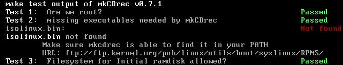
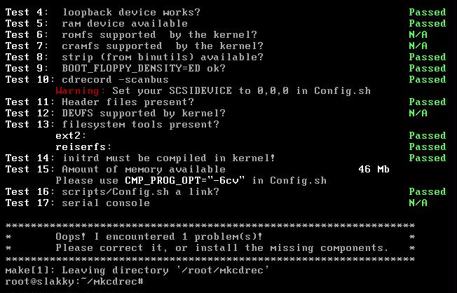

We all make backups, right?
Of course we do! This is the basic need for data recovery. Unfortunately hard disks die too fast and too often these days including boot disks. Therefore, having backups is not enough. We changed so many configuration files of the operating system that we certainly forget to restore some of them and at the time we need them the backup has been expired. Therefore, wouldn’t it be nice to have to same system back as before the disk died?
That’s where mkCDrec comes in…
Make CD-ROM recovery (mkCDrec) makes a bootable (El-Torito) disaster recovery image (CDrec.iso), including backups of the GNU/Linux system to the same CD-ROM (or CD-RW) if space permits, or to a multi-volume CD-ROM set. Otherwise, the backups can be stored on another local disk, NFS disk or (remote) tape.
However, a CD-ROM made with mkCDrec can easily be used as a rescue CD-ROM too. Especially, when you have installed the mkCDrec Utilities aside mkCDrec.
Currently, mkCDrec is working on Linux platform x86 (IA32), IA64, Sparc and PPC only.
Hopefully mkCDrec fills a gap in Open Source projects covering disaster recovery with full backups and with plenty of rescue tools standard delivered.
The reason of this howto is mainly to provide a written guidance for the end-user, as most people prefer to have a piece of paper in front of them instead of staring at the web pages.
MkCDrec is an Open Source project that follows the GNU General Public License (GPL) as published by the Free Software Foundation; either version 2 of the License, or any later version. The full text can be found at http://www.gnu.org/copyleft/gpl.html
The latest mkCDrec sources (and RPMs) can be downloaded from http://mkcdrec.ota.be/ or from SourceForge’s website http://sourceforge.net/project/showfiles.php?group_id=25327
Once downloaded the sources, e.g. mkCDrec_v0.8.9.tar.gz you can extract it into any directory of your choice. It really does not matter where you install it as long as you have the root password!
Indeed, it makes no sense to download and try mkCDrec you do not know the root password.
It is also possible to download the binary Intel x86 RPM (and/or source RPM) which should work on many Linux distributions such as RedHat, Mandriva and SuSe.
The default installation directory for the binary RPM version is /var/opt/mkcdrec.
To install a RPM based version of mkCDrec use the command “rpm –i” for a first time install or “rpm –U” to upgrade an older version. To remove a RPM based mkcdrec version use the command “rpm –e”.
The binaries for Debian is also available for download and use the command “dpkg -i” to install it.
While you are busy make some extra time to download the mkCDrec Utilities too (available from the same web site) into mkcdrec/ directory:
A rule of dumb with the mkCDrec utilities is to install the highest available version. mkCDrec Utilities is not a must, but do contain some nice tools.
A small note before starting using mkCDrec is that the “make” command is needed on your GNU/Linux system. Check this with “which make” which should return the location of the executable. If not, then you have to install the make rpm from your distribution.
On Debian systems do “apt-get update; apt-get install make”.
After unpacking mkCDrec run “make test” to check whether your system fulfill the requirements to create a bootable El-Torito CD-ROM.

If mkCDrec notices there is something missing “make test” will tell you, and sometimes gives some hints too.

Please note the warning given at test 10 about the SCSIDEVICE setting. Please edit the Config.sh file in the home directory of mkCDrec and change the setting.
It is worth the time to view the Config.sh file at least once as it contains plenty of parameters that can be modified by the end-user. At least you have to modify those variables as told after running a ‘make test’, otherwise you will never succeed in running mkCDrec successfully.
For a full list of the most important parameters see the web page http://mkcdrec.ota.be/project/config.html
Please note, mkCDrec also recognizes /etc/mkcdrec.conf file containing variables which override the settings in Config.sh. This is very handy to keep your local settings upgrade proof.